ヒューマンビートボックスアーティスト
"ShOh"の迫力のLIVEをリアル体感
TALK SHOW
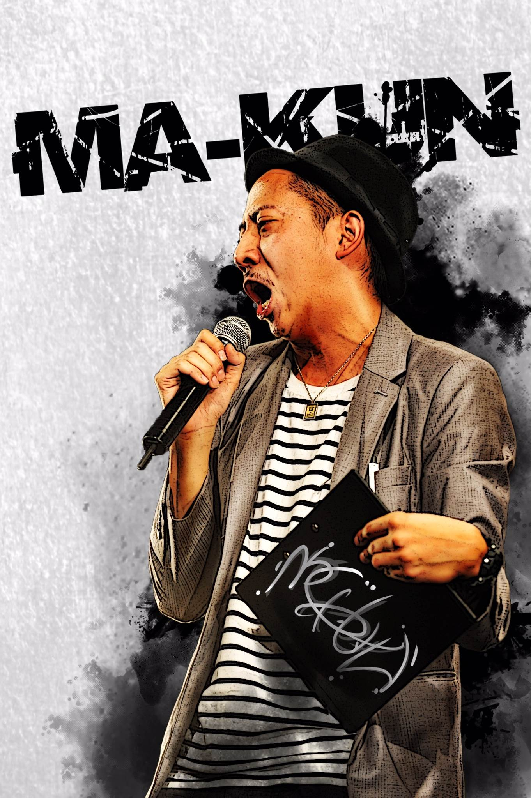
メインMC まーくん
自身もストリートダンサーとして活動しながらも、DANCE@TV、DANCE@HERO、GATBSY DANCE COMPETITION等各種イベントで司会を務めなるど、全国的に幅広く活躍しているマルチMC。会場を笑いに包むフリートークを武器に、様々なダンスイベントで会場を盛り上げる。インストラクター、舞台振り付けなど様々な方面でも活躍している。
今を駆け巡る20代のアーティスト、クリエーター総勢7名とメディア、イベントでユーモアラスなトークで場を盛り上げるMC"まーくん"を迎え、生い立ち、失敗談、今、私たちに求められているモノとは？などアーティスト独自の目線から今後のクリエーションについてディスカッションしていくトークショータイム！
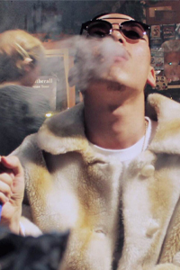
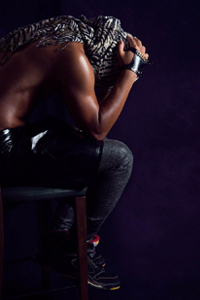
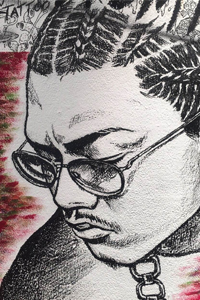
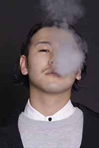
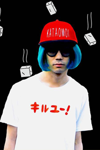
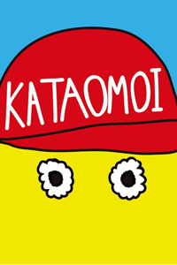
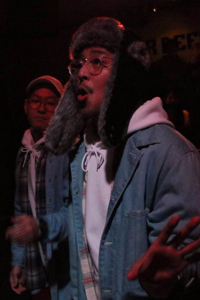
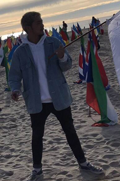
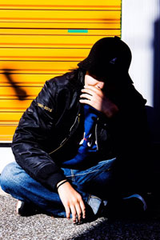
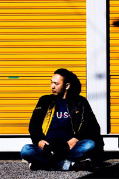
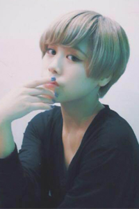
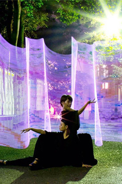
LIVE
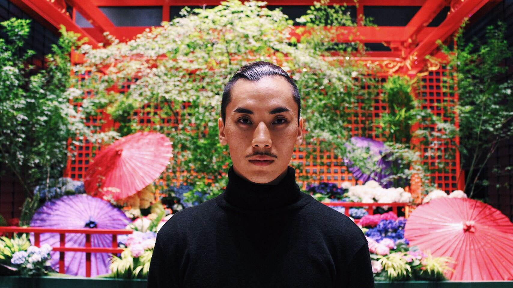
DJ
ヒップホップ、R&B、からは"DJKAI"
レゲェサウンドからは"YOKO-T"
Black Musicにフォーカスを置くDJタイムを
存分にご堪能あれ！
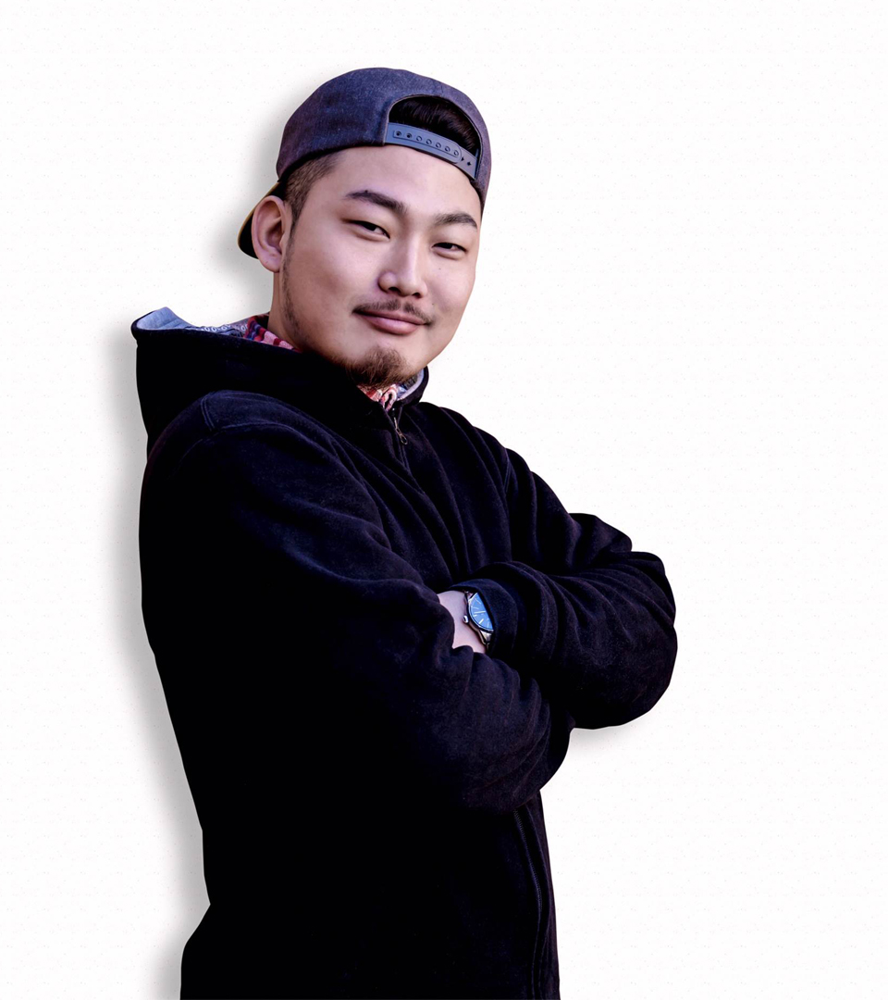

TIME TABLE
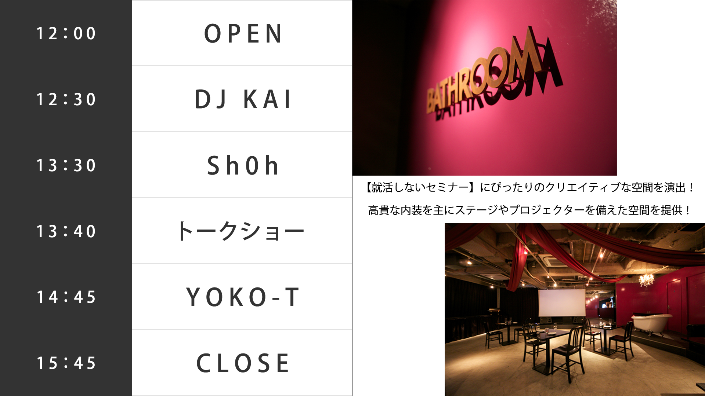
SPONSER
- 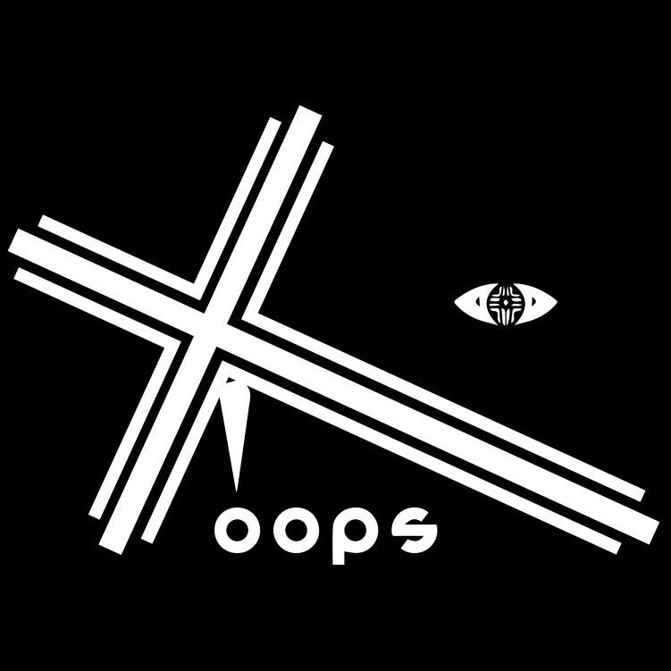
TICKET
前売りチケット
A 一般チケット：¥1,500
B プレミアム：¥15,000
※スタジオ撮影付きチケット
アーティスト活動などに使用出来るアーティスト写真をデータでお渡しします。さらにアーティスト活動に力強い特典をご用意！
詳しくはチケットページへ！
当日チケット
A 学生証提示：¥1,500
B 一般：¥2,500
C プレミアム¥16,000
※スタジオ撮影付きチケット
アーティスト活動などに使用出来るアーティスト写真をデータでお渡しします。さらにアーティスト活動に力強い特典をご用意！
詳しくはチケットページへ！
以下のENTRYボタンよりチケット購入サイトへ移動します。
注意事項など詳細は購入サイトにてご確認ください。
ENTRY
当サイトはタブレット端末に対応しておりません。
申し訳ありませんが、スマートフォンかPCからご覧ください。
ARTISTS

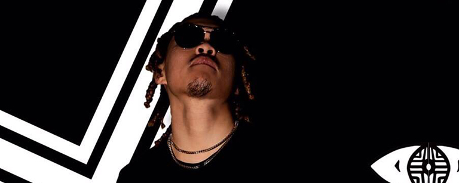
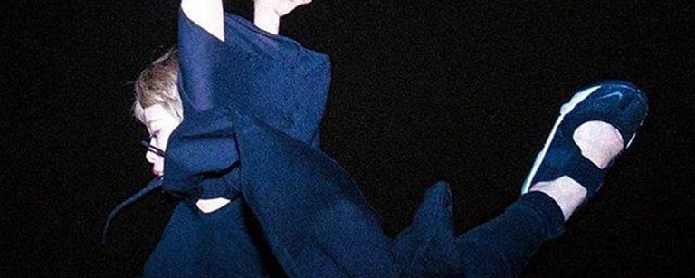

close
ShOh
Sh0h(ショー) The ”HumanDisco”。
HUMAN BEATBOX公式日本チャンピオン。
マイケル・ジャクソンの右腕であるトラヴィス・ペイン氏にその実力を認められ、直々に契約を交わした、世界を股にかけるHUMAN BEATBOX ARTIST。
10代の頃から世界大会のGUEST SHOWCASEや、TVCM等の出演を経験。
ドイツで開催されたHUMAN BEATBOXの世界大会では日本代表として出場し、アジア最高順位であるBEST16を獲得。
その他にも、世界最大級のトークショーである”TEDx”や大型野外フェスティバル"SUMMER SONIC”に出演する等、その唯一無二のスタイルで全世界で魅了する次世代アーティスト。
close
DAN
ファッションブランド”oops”のデザイナー、ディレクター。現在ファッションを軸に、クリエーションをしているアーティスト。幼少の頃に、Black Musicに魅了され数多のジャンルを辿り、中高生で再度、Black Musicに目覚め、高校卒業直後に音楽での表現を始め、音楽とファッションはイコールにあった思想で想いを届けていた。20歳になる頃に某会社の方に見出され、アパレルの道も平行し表現方法は二つに。そして、本格的に、2015年にファッションブランド”oops”をスタート。現在、イベント主催、スタイリスト、楽曲提供などにも力をいれ、自らできる表現方法を十二分に発揮している、アーティスト、デザイナー。-oops- 2015年VOGUEピックアップやヒューマンビートボックスアーティストSh0hさんのスポンサーなども話題になり10代20代を中心に人気を誇るブランド。最高級ラインでは世界で一つの完全オーダーメイド、一般ラインではオンラインを中心に販売。5月にはギャラリー会、受注会を控えている。ファッションブランド『REBERTAS』デザイナーと共に、点描画を中心としたアシッドな雰囲気なアートを描くアーティスト"TOMO¥A"とのクリエイティブユニット『DAT』を結成し、活動中である。
close
TOMO¥A
Artist/Creator
ペン画やドローイングを中心に、アクリル、コラージュなどの作品を制作している。中でも点描画(スティップリング)を得意とし、その精密さとニヒルでアシッドな雰囲気が特徴的である。
そして自身のファッションブランド「REBERTAS」のデザイナー、ディレクターとしての一面も持つ。(2015/ラフォーレ原宿短日売上1位、全国PARCO Pop Up Storeなど)
その他、グラフィックや映像、3DCG、プロジェクションマッピングなど最新のテクノロジーを駆使したユニット(TOMO¥A×MasanaoTakeuthi by Octmarker @Octmarkerland)やオートクチュールを中心にシーズンを展開するハイストリートブランド「OOPS @d_oops_xyz」のデザイナーDAN @officialblackdanとのクリエイティブユニット「DAT」を結成、活動中である。
close
ハジメファンタジー (センチメンタル研究家)
”恋に不器用なひとたちへ”をテーマにイラストやデザイン、ポエム、恋愛相談、DJなど多分野で活動。
2013年夏、好きなひとが自分の親友と付き合うも何も言えず、無地の白いTシャツに自作で「センチメンタル」とプリントして切ない気持ちをアピール。それを着て歩いているところをVILLAGE VANGUARDスタッフにスカウトされ「センチメンタルTシャツ」の全国発売が決定。その後も「ピュアTシャツ」「ゴメンネアリガトウロンT」「KATAOMOIキャップ」など"うまく言えないけど伝えたい気持ち"を可視化したグッズを続々と発表し、インパクト、メッセージ性の強さが渋谷原宿を中心に口コミで話題に。バンド・アイドル・映画・フェス・YOUTUBERなどジャンルを超えたコラボレーションをはじめ、ZOZOTOWNやラフォーレ原宿でも発売し人気を集める。
2015年には音楽系イラストレーター・フクザワと苦しい恋の絵本「胸ギュン」(タグビーム)を発売し、VILLAGE VANGUARDほぼ全国ツアー(39ヶ所でサイン会&ライブポエム)を開催。2016年には、SHIBUYA109 NET SHOPを中心に気持ちを届けることに特化した恋の戦闘服「SUNEGE/すねげ」を展開。同年11月にはツイートや書き下ろしエッセイをまとめた書籍『言葉にしなくちゃ』(ワニブックス)を発売。また24時間体制で電話やメールによる恋愛相談を受け付けポエムで返す『24時間恋愛相談マラソン』を企画し完走するなど、恋に不器用なひとたちを全力で応援している。
close
経歴
小学生時代
相撲と書道にすべてを捧ぐ。
中学生時代
遊んでしかいない。
高校生時代
中退し、メンズエッグのモデルとして一定期間活動。
大学生に憧れて半年間の猛勉強の末大学入学を決める。
大学生時代
ダンスにのめり込む。
hiphopのアンダーグラウンドシーンで活動する傍らで、EDWINやPioneerのCMに出演するなど、幅広く活動。
社会人
一度、有名アパレル通販サイトの〇〇townへ入社するも、自分での起業を目指し半年で退社
現在
表現屋無鉄砲という映像制作、写真撮影、デザイン制作を主とした事業をスタート。
無鉄砲では、共同代表としての活動と営業活動をし、様々な業界の人と日々未来について作戦を練っている。
その傍らでNijiriという飲食店を2017年夏に湘南、鎌倉、葉山近辺でのオープンに向け動き始めている。
26歳冬にカリフォルニアに武者修行として3ヶ月滞在。2017年１月現在カリフォルニアに在住。
close
1989年生まれ、東京都在住。
15歳の頃にストリートダンスに出会い、17歳で師LoCoYoKo氏との出会いをきっかけにストリートダンでの人生を歩む決意をするが、バイク事故により首の骨を粉砕骨折。
頚椎損傷によって首から下の機能を失い二度と病院から出られないと診断されるが、ダンスへの強い思いだけを胸に血の滲むようなリハビリを行い、半年後に高校に復学。
高校卒業後、母校のダンス部のコーチとして振り付けやレッスンを担当。生徒はバトルやコンテストで輝かしい成績を残す。
2009年、東京モード学園グラフィック学科入学。専門学校卒業後、国内最大級ファッション通販サイト【ZOZOTOWN】やファッションコーディネートアプリ【WEAR】などを運営する株式会社スタートトゥデイにデザイナーとして入社、主にWEBのデザインを行う。
専門学生時代からダンスイベントやライブ、モデルや広告、ファッションなどのカメラマンや、WEB・紙媒体のデザイン、アーティストMVや企業プロモーション映像制作などを行う。
2016年3月、フリーランスに転向。
ダンスバトルから生まれたバンド【GUSH -The Groove Usher-】
若手実力派ダンスチーム【Nicol.Crossence】
カントリーミュージックバンド【Lululu】が3ヶ月に1度主催するホームイベント「Orangeのスクリーン」
ビクターエンタテイメントと協力した次世代プロジェクト【WEFUNK】などの専属クリエイターとして活動。
また、後輩であるMTK.と【無鉄砲】を立ち上げる。
無鉄砲では企業と協力し、ダンスをツールとした感情の解放(心体表現)を行うプロジェクトや、教育とダンスの融合をテーマとした活動、ダンス合宿専用施設やダンススクールのプロデュースなどを行う。
現在HotNumber Designと無鉄砲を軸に自分の命を救ってくれたダンスで世界を変えるための普及活動やダンサーに対してのサポートをおこなうなど様々な分野にて活動中。
事故の後遺症による麻痺など、多くの障害を抱えながらも最強の障害者として同じような状況の障害を持つ人達の希望になりたいと思い、ダンスで培った感性を武器に様々な活動を行っている。
事故から10年目の2016年10月、ついに念願のソロダンスバトルで優勝を成し遂げた。
close
Sumire Onuki
dance artist、アートディレクター、イベントプランナー
埼玉県出身
日本女子体育大学舞踊学専攻卒業
8歳からクラシックバレエを習う。その後大学卒業まで舞踊を専門に学び様々なジャンルを習得。作品では植物や自然環境をモチーフにしたものが多く、人間の仕草や動作から展開される振付や空間を使った演出を得意とする。
2014年5月から、自身のコンテンポラリーダンスデュオCyan. (シアン)そしてパフォーマンスアートプロジェクトWHITE PLAN ROOMを主宰し、同世代のアーティストやクリエイターと「performance art」を主とした創作活動を行う。
出演は勿論、ディレクションや構成演出、アーティストやアイドル振付指導、イベントプランナーまで活動の幅は多岐に渡る。
【project】一部
2014.5 合同展示会ROOM主催
2014.9 performance art LIVE「SUMMER DOME」発表
2015.1 performance art LIVE「starry day」発表
2015.12 event「#WHITEPLANROOM」主催
2016.6 Gallery Conceal Shibuyaコラボイベント「GARDEN」プロデュース
2016.11 performance art LIVE「Lump of lie.」発表
2017.3 Misaki Ushiozu 2017s/s Collection「Monologue」プロデュース
その他イベント出演、WS開催、映像制作多数
【works】一部
・スルースキルズ「LOVE4U」「すきだっちゅーの！」「熱いハートが叫んでる」振付
・atME (時代加速装置@’mE)「SE」「Paralyzer」「しゅきちゅちゅ♡」「愛ドル」「○○しかっ！」振付、指導
・川嶋志乃舞「遊廓ディスコ」MV芸者風ダンサー振付、出演
・吉田凜音「裏原ンウェイ」MV振付、指導
・KAGOME WebCM「野菜のシャワー」動き振付
・WEGO 2016S/Sカタログ FUN BOOK モデル
・CONVERSE ALL STAR 100th展示会映像出演他多数
close
-フォトグラファー-
大学からフィルムカメラを始め、在学中は主にフィルムでのモノクロ写真撮影に注力。在学中より原宿の写真館に勤め、デジタルカメラでの撮影も学ぶ。
その後、フリーランスとなり、united arrows、rosebud、福助、SHIPSなどのブランドサイトでの商品撮りや、イベントの撮影を担当。
ボーカルグループやモデルなどのアーティスト写真、宣材写真も撮影している。
close
まーくん
メイン MC
自身もストリートダンサーとして活動しながらも、DANCE@TV、DANCE@HERO、GATBSY DANCE COMPETITION等各種イベントで司会を務めなるど、全国的に幅広く活躍しているマルチMC。会場を笑いに包むフリートークを武器に、様々なダンスイベントで会場を盛り上げる。インストラクター、舞台振り付けなど様々な方面でも活躍している。
close
DJ KAI
幼少から両親の影響でソウルミュージックと縁があった。
10歳でヒップホップに出会いブラックカルチャーにのめり込む。
18歳の時にレコードに目覚め、当時珍しいアナログDJとして六本木IBEXにて木曜レギュラー R&B HIPHOP 80〜00sを回す。
その後転々とし現在 吉祥寺でプライベートパーティのdjを月に一回不定期で地元浅草の自分の店でオーガナイズイベントUNCAIN NIGHTを開催中。
ジャンル年齢問わずシーンに合わせたDJでフロアをロックする！
DJに興味はあるけどどうすればいい？ やりたいけどお金が…設備が…なんて方に！初心者向けのDJ講習を開催します！誰でも参加可能 講習場所 時間などはtwitterにてDMで詳細をお送りします@dj_kai92sまでドシドシご連絡ください！
close
YOKO-T fr.BASARASOUL
東京を中心に若手の中でも勢いあるCREW、”BASARASOUL”の1人がこの男、YOKO-T(MC/SELECTER)である。
彼自身が音楽の道を志したきっかけは、他でもないBASARASOULの影響だ。
LA、ジャマイカに渡り修行を重ね今日に至る。リリックの内容を重視する選曲は若手の台頭。これからの東京のREGGAEシーンを担う1人として今注目を集めている。
レギュラーイベント
毎月第2.4火曜 PARTY HARD TUESDAY at.渋谷LOUNGE NEO
毎月第3金曜 CITY ROCK FRIDAY at.渋谷JUMP
偶数月第3水曜 RAGGAPUNCH at.乃木坂CACTUS
奇数月第3木曜 RAM JAM DANCEHALL
毎月第4土曜 GoodFellas at.渋谷GAME
TALK SHOW
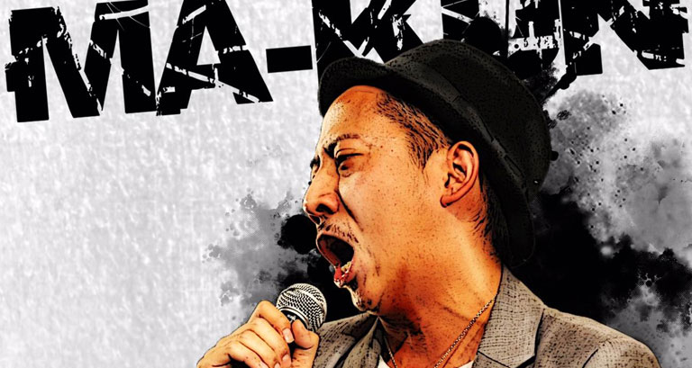今を駆け巡る20代のアーティスト、クリエーター総勢7名とメディア、イベントでユーモアラスなトークで場を盛り上げるMC"まーくん"を迎え、
生い立ち、失敗談、今、私たちに求められているモノとは？などアーティスト独自の目線から今後のクリエーションについてディスカッションしていくトークショータイム！
LIVE
ヒューマンビートボックスアーティスト"Sh0h"の迫力のLIVEをリアル体感！！
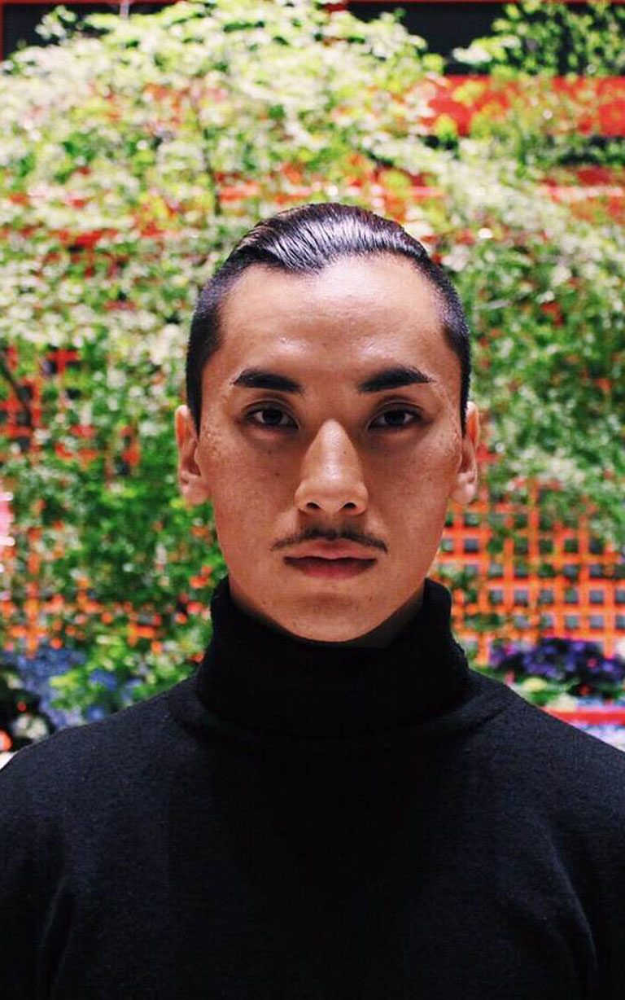DJ
ヒップホップ、R&B、からは"DJ KAI"レゲエ サウンドからは "YOKO-T"Black Musicにフォーカスを置くDJタイムを存分にご堪能あれ！
TIME TABLE
SPONSER
TICKET
前売りチケット
A 一般チケット
※就活しないセミナー限定ノベルティ付きチケット 当日チケット拝見しお渡しさせて頂きます。
¥1,500
B プレミアム
※スタジオ撮影付きチケット
アーティスト活動などに使用出来るアーティスト写真をデータでお渡しします。さらにアーティスト活動に力強い特典をご用意！詳しくはチケットページへ！
¥15,000
当日チケット
A 学生証提示
¥1,500
B 一般
¥2,500
C プレミアム
※スタジオ撮影付きチケット
アーティスト活動などに使用出来るアーティスト写真をデータでお渡しします。さらにアーティスト活動に力強い特典をご用意！詳しくはチケットページへ！
¥16,000
以下のENTRYボタンよりチケット購入サイトへ移動します。注意事項など詳細は購入サイトにてご確認ください。